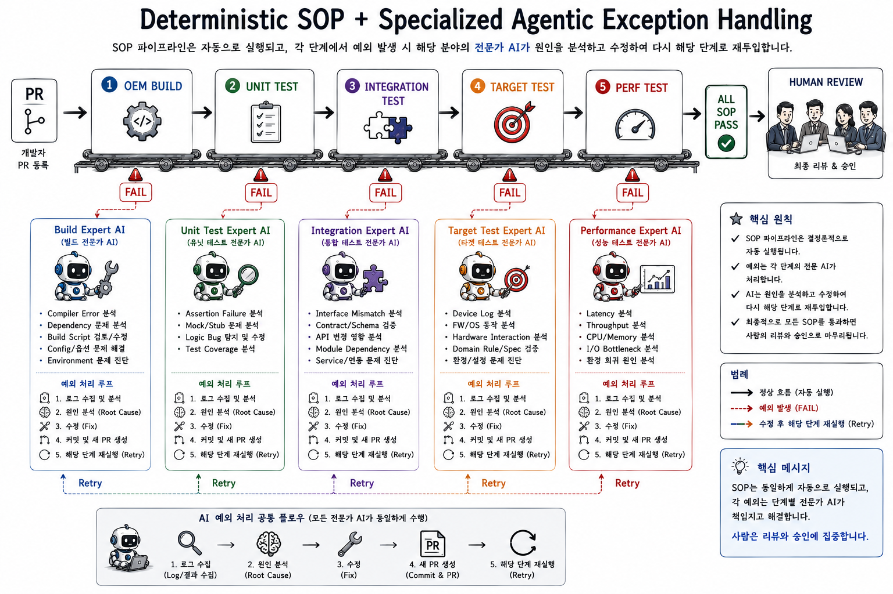
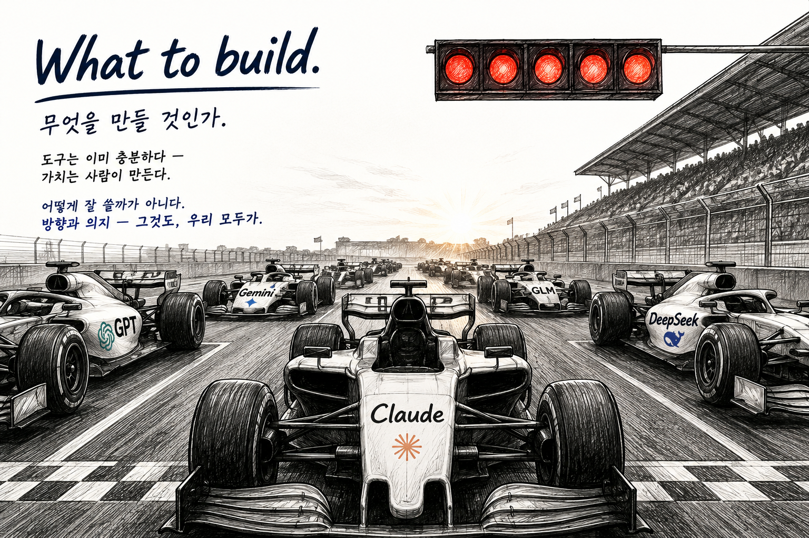

Slides
발표자료 모음 — 시리즈 글의 핵심을 슬라이드로 정리했습니다.
Presentations

01
AI Context, Agent Entropy
매 편집은 합리적이다. 그러나, 누적되면 — 모순이 된다.

02
HBM의 천장
더 큰 컨텍스트 윈도우가 답이 아닌 이유 — 물리 법칙이 먼저다.

03
Prompt → Context → Harness
AI Agent의 진화 — 대체가 아니라 적층. Better prompts don't scale. Better systems do.

04
AI일수록, 클래식이다
AI가 바꾼 건 속도뿐이다. 50년의 원칙은 이름만 바꿔 다시 돌아왔다.

05
방향의 게이트
잘못된 방향이 레버리지를 만나는 곳에서 — 복구 비용이 폭발한다.

06
일하는 방식이 바뀐다
PR만 등록하면 — 빌드부터 성능까지 SOP가 자동 실행. 예외만 에이전트가 처리한다.

07
무엇을 만들 것인가
도구는 상수 — 완제품은 조직이 만든다. 개인 생산성이 아니라, 조직이 바꾼다.